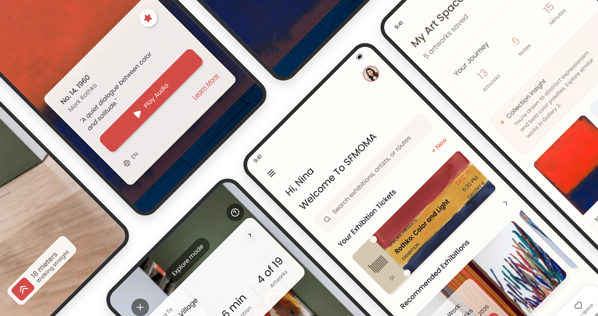
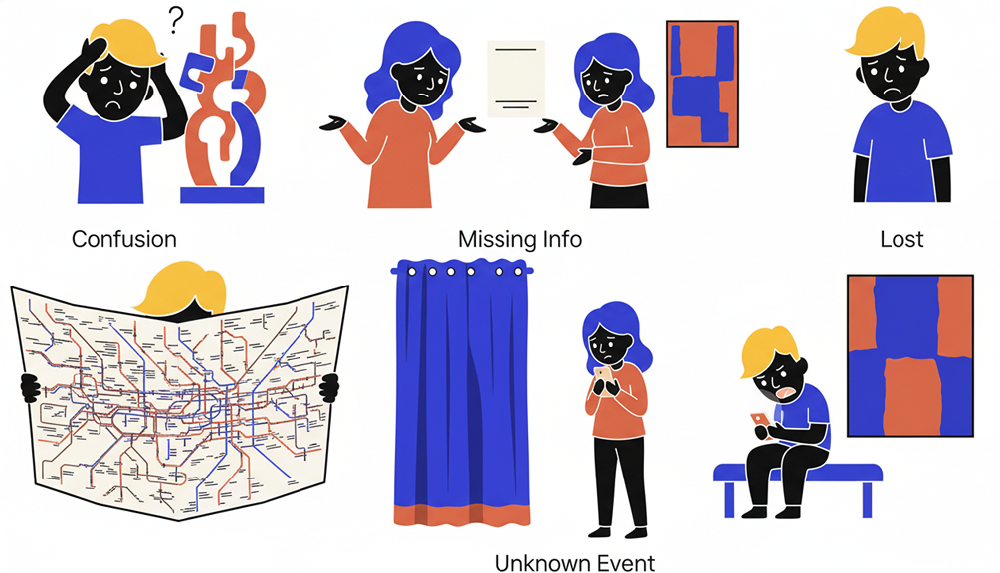
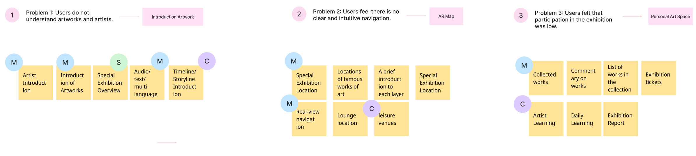
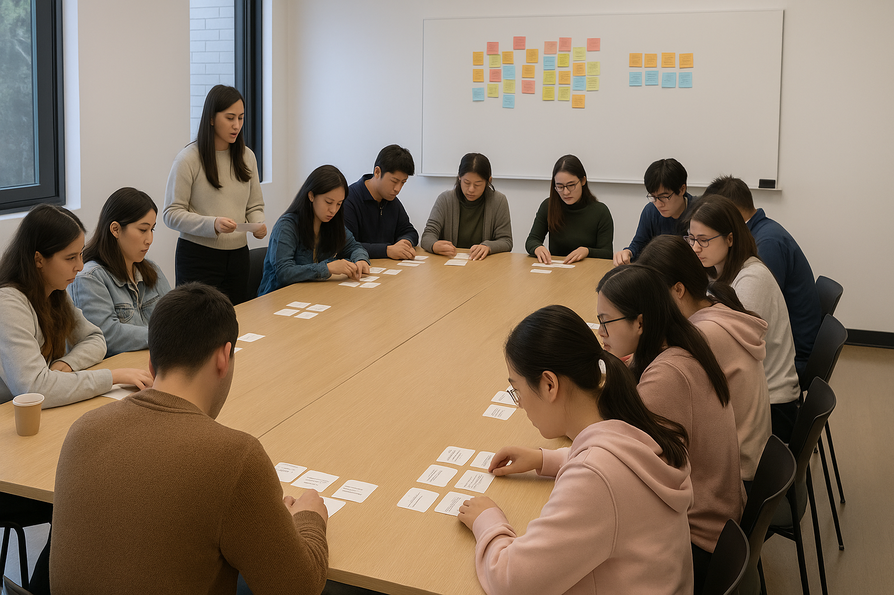
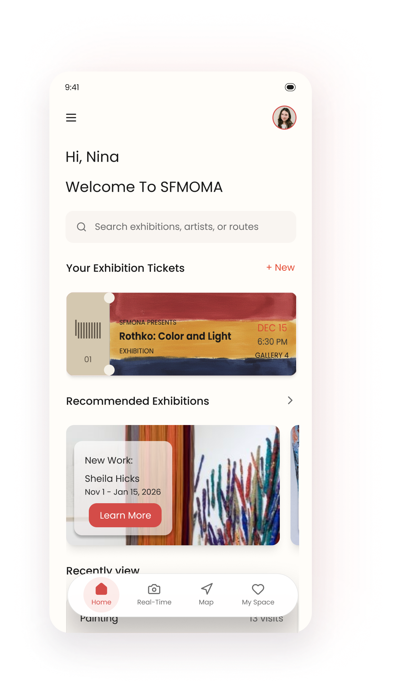
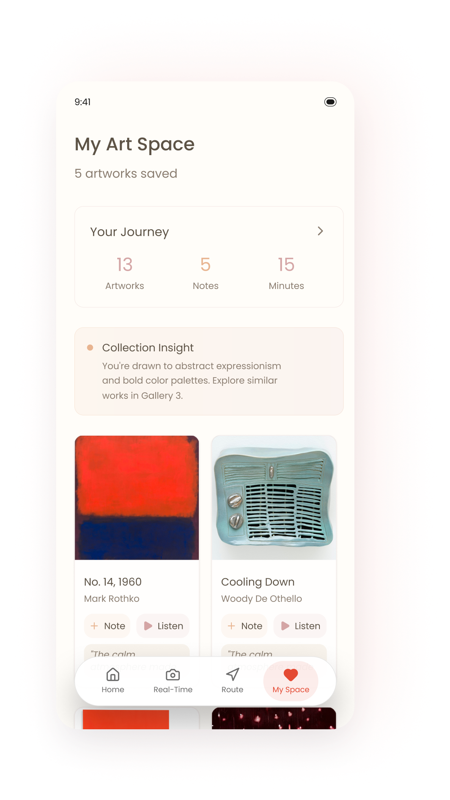
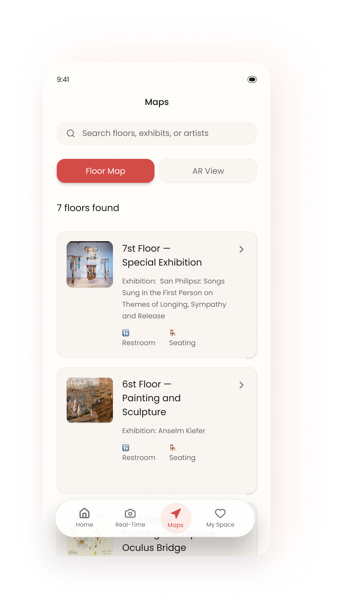
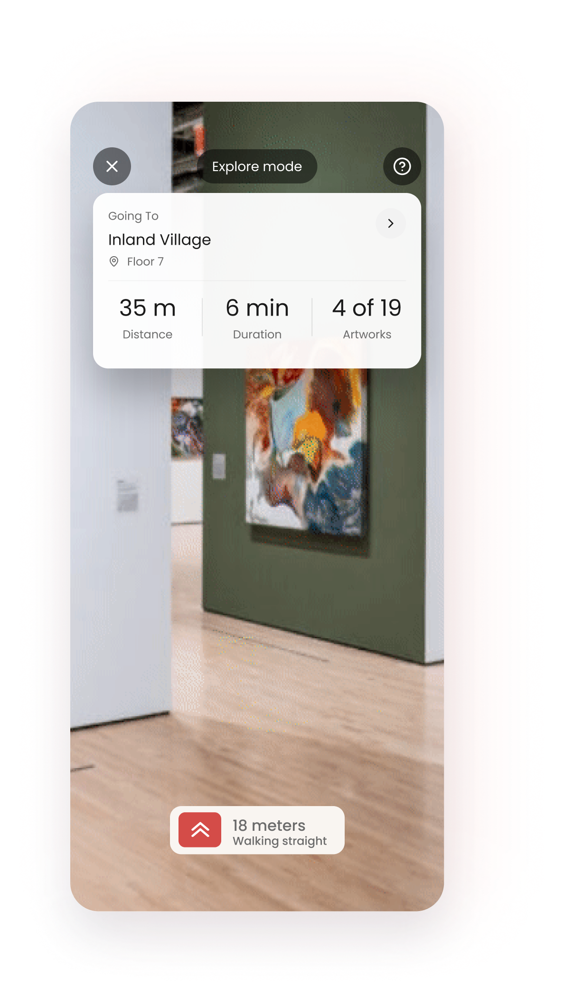

SeeMOMA is a B2C art visit assistant, specifically designed for the San Francisco Museum of Modern Art (SFMOMA). By providing instant artwork interpretations, intuitive floor overviews, and augmented reality (AR) navigation, the product reduces cognitive load, enhances visitor satisfaction, and helps the museum offer a more convenient and personalized art experience.

When you stand in front of an artwork, your phone automatically recognizes it, pops up an artwork card, and displays information about the artwork and the artist.
The lightweight map introduces each floor in a step-by-step manner, telling you the theme and key points of each floor, and is equipped with AR technology to guide users through the visit in a more intuitive way.
Collect your favorite works, record your thoughts, and support users in creating a personalized “exhibition space”.

Have you ever walked through an exhibition and felt a little lost or unsure about what you were seeing? Many visitors at SFMOMA experience the same challenge.
At the San Francisco Museum of Modern Art (SFMOMA), visitors face challenges in understanding artworks due to a lack of clear informational guidance.
These challenges can lead to visitor confusion, reduced engagement, and decreased emotional investment, making it difficult for them to fully enjoy their museum visit.
“I love art, but so often I leave the museum still unsure what I actually saw.”
Help users understand artworks
Help users find the route faster
I conducted a quantitative survey with a sample size of 36 participants and an effective sample size of 30.
Among the 31 responses we collected, most visitors desire museums to provide:
I hope to explain artworks in a way that I can understand, which will help me learn from the exhibition.
I hope to leave some traces to commemorate this exhibition, which will make me more immersed in the experience.
A clear and intuitive map would be very helpful to me; I want to quickly know where the works I want to see are.
Visitors expect an experience that goes beyond simply understanding the artworks and finding direction; they also hope to leave their own mark on the exhibition.
Based on the above research insights and user needs, I explored an AR-powered mobile app.
This mobile application incorporates augmented reality (AR) technology to provide a more intuitive visiting experience, helping visitors navigate the museum with clarity and confidence.
Phone app
AR technology
Understanding users’ frustrations allowed us to uncover clear opportunity areas. Through functional brainstorming, we mapped each pain point to three experience directions.

To verify whether our concept truly solves visitors’ real needs and to uncover what they care about the most, I organized a user group workshop with 15 participants who shared similar pain points in their museum experiences.
I translated the design opportunities into three user tasks and evaluated whether our solution meaningfully improves the visit experience.
After the tasks were completed, I conducted a card sorting session where participants ranked the features based on their practicality and emotional value.
Card Sorting FindingsOur concept is feasible, but users need to be able to view information on each layer rather than just a direct map.
Users primarily need to understand the artwork, and they expect digital souvenirs after viewing the exhibition.





Participants were able to complete key tasks (viewing explanations, navigating to an artwork, saving a piece) with minimal errors and reduced confusion.
Users rated this experience very highly; this indicates that if such an app existed in real life, participants would use and recommend it.